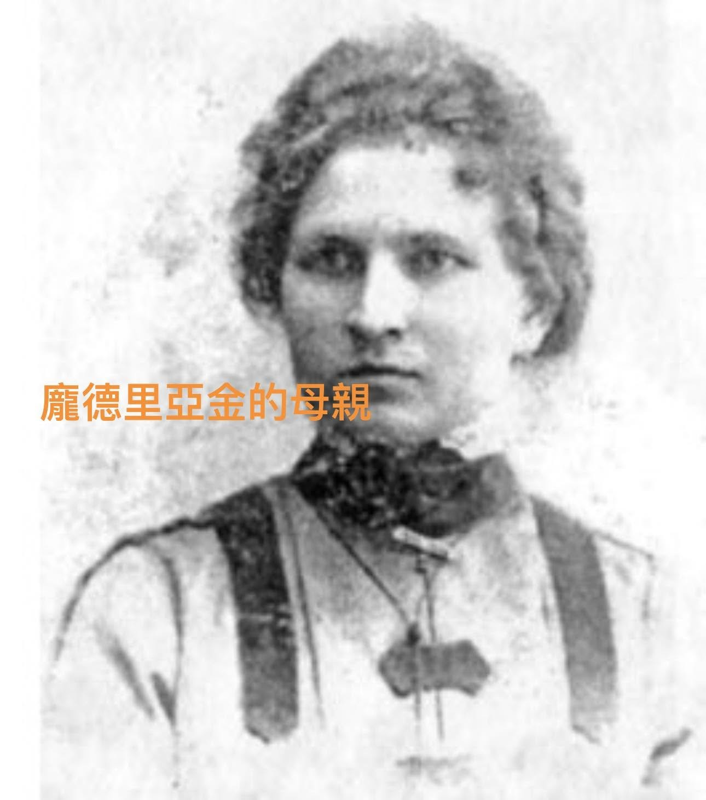

偉大數學家的推手 ～母親
文/宗翰老師
高斯的母親曾向數學家F.Bolyai問道：高斯將來會有成就嗎？
F.Bolyai：「您的兒子將成為歐洲最偉大的數學家！」
為此她激動得熱淚盈眶。
歷史上幾位最偉大的數學家 ：牛頓、萊布尼茲（17世紀的百科全書型才子，與牛頓同為微積分開創者）、高斯，在他們的成長、學習過程，母親都扮演重要的支持者。
牛頓是個遺腹子，在母親與舅舅支持下才能進入劍橋大學，開創不朽功業！
萊布尼茲六歲喪父，在出身書香世家的母親悉心栽培下，終於成為名留青史的科學大師。
高斯的母親雖是個目不識丁的工匠妻子，卻意志堅定且對孩子深具信心，不顧丈夫的反對，持續地鼓勵孩子投身學術，並以孩子為榮。
而高斯亦不負所望終成大器！
高斯悉心照料母親，直到她以96歲高齡辭世。
前蘇聯數學大師列夫·龐德里亞金除了在函數論、代數李群、拓撲學、微分幾何上有卓著貢獻，也是控制論大師。令人驚嘆的是他在14歲時因為意外而失明！
他偉大的學術成得歸功於背後的偉大推手—母親。（見下圖）
這位沒有受過高等教育，數學門外漢的母親，以驚人的毅力與無比的愛心，陪伴他唸了所有的數學課程並進入莫斯科國立大學，最終拿到莫斯科大學的數學與物理博士學位。
母親節前夕，向天下所有對孩子學習給予無限耐心、愛心與支持的媽媽們致敬！
PS:
有次我在上課時提到牛頓、萊布尼茲、伽羅瓦、丘成桐幾位數學大師有一個共同巧合，他們的父親都早逝。
這時台下一位同學悠悠的說道：老師 你不能期待我了，我爸爸健康得很！
…………？$@！「；
